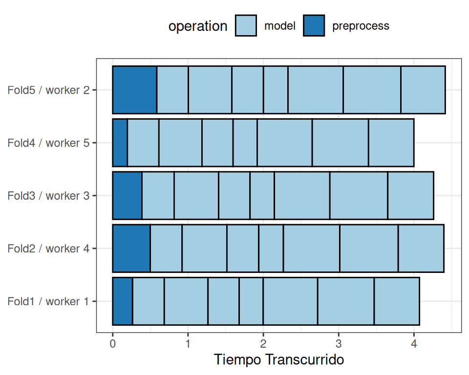

library(tidymodels)
tidymodels_prefer()
mlp_spec <-
mlp(hidden_units = tune(), penalty = tune(), epochs = tune()) %>%
set_engine("nnet", trace = 0) %>%
set_mode("classification")13 Búsqueda De Cuadrícula
En el Capítulo 12 demostramos cómo los usuarios pueden marcar o etiquetar argumentos en recetas de preprocesamiento y/o especificaciones de modelo para optimización usando la función tune(). Una vez que sabemos qué optimizar, es hora de abordar la cuestión de cómo optimizar los parámetros. Este capítulo describe los métodos de búsqueda en cuadrícula que especifican los posibles valores de los parámetros a priori. Capítulo 14 continuará la discusión describiendo los métodos de búsqueda iterativa).
Comencemos viendo dos enfoques principales para ensamblar una cuadrícula.
13.1 Cuadrículas Regulares Y No Regulares
Hay dos tipos principales de cuadrículas. Una cuadrícula regular combina cada parámetro (con su correspondiente conjunto de valores posibles) factorialmente, es decir, utilizando todas las combinaciones de los conjuntos. Alternativamente, una cuadrícula no regular es aquella en la que las combinaciones de parámetros no se forman a partir de un pequeño conjunto de puntos.
Antes de analizar cada tipo con más detalle, consideremos un modelo de ejemplo: el modelo de perceptrón multicapa (también conocido como red neuronal artificial de una sola capa). Los parámetros marcados para tuning son:
el número de unidades ocultas
el número de épocas/iteraciones de ajuste en el entrenamiento del modelo
la cantidad de penalización por pérdida de peso
Históricamente, el número de épocas estuvo determinado por la detención temprana; un conjunto de validación separado determinó la duración del entrenamiento en función de la tasa de error, ya que volver a predecir el conjunto de entrenamiento conducía a un sobreajuste. En nuestro caso, el uso de una penalización por disminución de peso debería prohibir el sobreajuste, y hay poco daño en ajustar la penalización y el número de épocas.
Usando parsnip, la especificación para un modelo de clasificación que se ajusta usando el paquete nnet es:
El argumento trace = 0 evita el registro adicional del proceso de entrenamiento. Como se muestra en Sección 12.6, la función extract_parameter_set_dials() puede extraer el conjunto de argumentos con valores desconocidos y establece sus objetos dials:
mlp_param <- extract_parameter_set_dials(mlp_spec)
mlp_param %>% extract_parameter_dials("hidden_units")
## # Hidden Units (quantitative)
## Range: [1, 10]
mlp_param %>% extract_parameter_dials("penalty")
## Amount of Regularization (quantitative)
## Transformer: log-10 [1e-100, Inf]
## Range (transformed scale): [-10, 0]
mlp_param %>% extract_parameter_dials("epochs")
## # Epochs (quantitative)
## Range: [10, 1000]Esta salida indica que los objetos de parámetros están completos e imprime sus rangos predeterminados. Estos valores se utilizarán para demostrar cómo crear diferentes tipos de cuadrículas de parámetros.
Cuadrículas regulares
Las cuadrículas regulares son combinaciones de conjuntos separados de valores de parámetros. Primero, el usuario crea un conjunto distinto de valores para cada parámetro. El número de valores posibles no tiene por qué ser el mismo para cada parámetro. La función tidyr crossing() es una forma de crear una cuadrícula regular:
El objeto de parámetro conoce los rangos de los parámetros. El paquete dials contiene un conjunto de funciones grid_*() que toman el objeto parámetro como entrada para producir diferentes tipos de cuadrículas. Por ejemplo:
grid_regular(mlp_param, levels = 2)
## # A tibble: 8 × 3
## hidden_units penalty epochs
## <int> <dbl> <int>
## 1 1 0.0000000001 10
## 2 10 0.0000000001 10
## 3 1 1 10
## 4 10 1 10
## 5 1 0.0000000001 1000
## 6 10 0.0000000001 1000
## # ℹ 2 more rowsEl argumento levels es el número de niveles por parámetro a crear. También puede tomar un vector de valores con nombre:
mlp_param %>%
grid_regular(levels = c(hidden_units = 3, penalty = 2, epochs = 2))
## # A tibble: 12 × 3
## hidden_units penalty epochs
## <int> <dbl> <int>
## 1 1 0.0000000001 10
## 2 5 0.0000000001 10
## 3 10 0.0000000001 10
## 4 1 1 10
## 5 5 1 10
## 6 10 1 10
## # ℹ 6 more rowsExisten técnicas para crear cuadrículas regulares que no utilizan todos los valores posibles de cada conjunto de parámetros. Estos diseños factoriales fraccionales (Box, Hunter, y Hunter 2005) también podrían usarse. Para obtener más información, consulte la Vista de tareas de CRAN para el diseño experimental.1
El uso de cuadrículas regulares puede ser costoso desde el punto de vista computacional, especialmente cuando hay una cantidad media a grande de parámetros de ajuste. Esto es cierto para muchos modelos pero no para todos. Como se analiza en Sección 13.5 a continuación, ¡hay muchos modelos cuyo tiempo de ajuste disminuye con una cuadrícula normal!
Una ventaja de utilizar una cuadrícula regular es que las relaciones y patrones entre los parámetros de ajuste y las métricas del modelo se entienden fácilmente. La naturaleza factorial de estos diseños permite examinar cada parámetro por separado con poca confusión entre los parámetros.
Rejillas irregulares
Hay varias opciones para crear cuadrículas no regulares. La primera es utilizar un muestreo aleatorio en toda la gama de parámetros. La función grid_random() genera números aleatorios uniformes independientes en todos los rangos de parámetros. Si el objeto parámetro tiene una transformación asociada (como la que tenemos para “penalización”, penalty), los números aleatorios se generan en la escala transformada. Creemos una cuadrícula aleatoria para los parámetros de nuestra red neuronal de ejemplo:
set.seed(1301)
mlp_param %>%
grid_random(size = 1000) %>% # 'size' es el número de combinaciones
summary()
## hidden_units penalty epochs
## Min. : 1.00 Min. :0.0000 Min. : 10
## 1st Qu.: 3.00 1st Qu.:0.0000 1st Qu.:266
## Median : 5.00 Median :0.0000 Median :497
## Mean : 5.38 Mean :0.0437 Mean :510
## 3rd Qu.: 8.00 3rd Qu.:0.0027 3rd Qu.:761
## Max. :10.00 Max. :0.9814 Max. :999Para la “penalización”, penalty, los números aleatorios son uniformes en la escala logarítmica (base-10), pero los valores en la cuadrícula están en unidades naturales.
El problema con las cuadrículas aleatorias es que, en las cuadrículas pequeñas y medianas, los valores aleatorios pueden dar como resultado combinaciones de parámetros superpuestos. Además, la cuadrícula aleatoria debe cubrir todo el espacio de parámetros, pero la probabilidad de una buena cobertura aumenta con el número de valores de la cuadrícula. Incluso para una muestra de 15 puntos candidatos, Figura 13.1 muestra cierta superposición entre puntos para nuestro perceptrón multicapa de ejemplo.
library(ggforce)
set.seed(1302)
mlp_param %>%
# La opción 'original = FALSE' mantiene la penalización en log10 unidades
grid_random(size = 20, original = FALSE) %>%
ggplot(aes(x = .panel_x, y = .panel_y)) +
geom_point() +
geom_blank() +
facet_matrix(vars(hidden_units, penalty, epochs), layer.diag = 2) +
labs(title = "Diseño aleatorio con 20 candidatos")Un enfoque mucho mejor es utilizar un conjunto de diseños experimentales llamados diseños de relleno de espacio. Si bien los diferentes métodos de diseño tienen objetivos ligeramente diferentes, generalmente encuentran una configuración de puntos que cubre el espacio de parámetros con la menor posibilidad de superposición o valores redundantes. Ejemplos de tales diseños son los hipercubos latinos (McKay, Beckman, y Conover 1979), los diseños de máxima entropía (Shewry y Wynn 1987), los diseños de máxima proyección (Joseph, Gul, y Ba 2015) y otros. Consulte Santner et al. (2003) para obtener una descripción general.
El paquete dials contiene funciones para diseños de hipercubo latino y de máxima entropía. Al igual que con grid_random(), las entradas principales son el número de combinaciones de parámetros y un objeto de parámetro. Comparemos un diseño aleatorio con un diseño de hipercubo latino para 20 valores de parámetros candidatos en Figura 13.2.
set.seed(1303)
mlp_param %>%
grid_latin_hypercube(size = 20, original = FALSE) %>%
ggplot(aes(x = .panel_x, y = .panel_y)) +
geom_point() +
geom_blank() +
facet_matrix(vars(hidden_units, penalty, epochs), layer.diag = 2) +
labs(title = "Diseño de Hipercubo Latino con 20 candidatos")## Warning: `grid_latin_hypercube()` was deprecated in dials 1.3.0.
## ℹ Please use `grid_space_filling()` instead.Si bien no es perfecto, este diseño de hipercubo latino aleja los puntos entre sí y permite una mejor exploración del espacio de hiperparámetros.
Los diseños que llenan el espacio pueden ser muy eficaces para representar el espacio de parámetros. El diseño predeterminado utilizado por el paquete tune es el diseño de máxima entropía. Estos tienden a producir cuadrículas que cubren bien el espacio candidato y aumentan drásticamente las posibilidades de encontrar buenos resultados.
13.2 Evaluación De La Cuadrícula
Para elegir la mejor combinación de parámetros de ajuste, cada conjunto candidato se evalúa utilizando datos que no se utilizaron para entrenar ese modelo. Los métodos de remuestreo o un único conjunto de validación funcionan bien para este propósito. El proceso (y la sintaxis) se parece mucho al enfoque en Sección 10.3 que utilizó la función fit_resamples() del paquete tune.
Después del remuestreo, el usuario selecciona el conjunto de parámetros candidatos más apropiado. Podría tener sentido elegir la mejor combinación de parámetros empíricamente o sesgar la elección hacia otros aspectos del ajuste del modelo, como la simplicidad.
Usamos un conjunto de datos de clasificación para demostrar el ajuste del modelo en este y el próximo capítulo. Los datos provienen de Hill et al. (2007), quien desarrolló una herramienta de laboratorio de microscopía automatizada para la investigación del cáncer. Los datos consisten en 56 mediciones de imágenes de 2019 células de cáncer de mama humano. Estos predictores representan características de forma e intensidad de diferentes partes de las células (por ejemplo, el núcleo, el límite celular, etc.). Existe un alto grado de correlación entre los predictores. Por ejemplo, existen varios predictores diferentes que miden el tamaño y la forma del núcleo y el límite celular. Además, individualmente, muchos predictores tienen distribuciones sesgadas.
Cada celda pertenece a una de dos clases. Dado que esto es parte de una prueba de laboratorio automatizada, la atención se centró en la capacidad de predicción en lugar de la inferencia.
Los datos están incluidos en el paquete modeldata. Eliminemos una columna que no es necesaria para el análisis (caso):
library(tidymodels)
data(cells)
cells <- cells %>% select(-case)Dadas las dimensiones de los datos, podemos calcular métricas de rendimiento utilizando una validación cruzada de 10 veces:
set.seed(1304)
cell_folds <- vfold_cv(cells)Debido al alto grado de correlación entre los predictores, tiene sentido utilizar la extracción de características PCA para descorrelacionar los predictores. La siguiente receta contiene pasos para transformar los predictores para aumentar la simetría, normalizarlos para que estén en la misma escala y luego realizar la extracción de características. También se ajusta la cantidad de componentes PCA que se conservarán, junto con los parámetros del modelo.
Si bien los componentes PCA resultantes están técnicamente en la misma escala, los componentes de rango inferior tienden a tener un rango más amplio que los componentes de rango superior. Por esta razón, volvemos a normalizar para obligar a los predictores a tener la misma media y varianza.
Muchos de los predictores tienen distribuciones sesgadas. Dado que el PCA se basa en la varianza, los valores extremos pueden tener un efecto perjudicial en estos cálculos. Para contrarrestar esto, agreguemos un paso de receta que estime una transformación de Yeo-Johnson para cada predictor (Yeo y Johnson 2000). Si bien originalmente se pensó como una transformación del resultado, también se puede utilizar para estimar transformaciones que fomentan distribuciones más simétricas. Este paso step_YeoJohnson() ocurre en la receta justo antes de la normalización inicial mediante step_normalize(). Luego, combinemos esta receta de ingeniería de características con nuestra especificación de modelo de red neuronal mlp_spec.
mlp_rec <-
recipe(class ~ ., data = cells) %>%
step_YeoJohnson(all_numeric_predictors()) %>%
step_normalize(all_numeric_predictors()) %>%
step_pca(all_numeric_predictors(), num_comp = tune()) %>%
step_normalize(all_numeric_predictors())
mlp_wflow <-
workflow() %>%
add_model(mlp_spec) %>%
add_recipe(mlp_rec)Creemos un objeto de parámetro mlp_param para ajustar algunos de los rangos predeterminados. Podemos cambiar el número de épocas para tener un rango más pequeño (50 a 200 épocas). Además, el rango predeterminado para num_comp() es un rango muy estrecho (de uno a cuatro componentes); podemos aumentar el rango a 40 componentes y establecer el valor mínimo en cero:
En step_pca(), usar cero componentes PCA es un atajo para omitir la extracción de funciones. De esta manera, los predictores originales se pueden comparar directamente con los resultados que incluyen componentes PCA.
La función tune_grid() es la función principal para realizar búsquedas en la cuadrícula. Su funcionalidad es muy similar a fit_resamples() de Sección 10.3, aunque tiene argumentos adicionales relacionados con la cuadrícula:
grid: Un número entero o marco de datos. Cuando se utiliza un número entero, la función crea un diseño que llena el espacio con un número degridde combinaciones de parámetros candidatos. Si existen combinaciones de parámetros específicas, el parámetrogridse utiliza para pasarlas a la función.param_info: Un argumento opcional para definir los rangos de parámetros. El argumento es más útil cuandogrides un número entero.
De lo contrario, la interfaz para tune_grid() es la misma que fit_resamples(). El primer argumento es una especificación del modelo o un flujo de trabajo. Cuando se da un modelo, el segundo argumento puede ser una receta o una fórmula. El otro argumento requerido es un objeto de remuestreo rsample (como cell_folds). La siguiente llamada también pasa un conjunto de métricas para que el área bajo la curva ROC se mida durante el remuestreo.
Para comenzar, evaluemos una cuadrícula regular con tres niveles en los remuestreos:
roc_res <- metric_set(roc_auc)
set.seed(1305)
mlp_reg_tune <-
mlp_wflow %>%
tune_grid(
cell_folds,
grid = mlp_param %>% grid_regular(levels = 3),
metrics = roc_res
)
mlp_reg_tune
## # Tuning results
## # 10-fold cross-validation
## # A tibble: 10 × 4
## splits id .metrics .notes
## <list> <chr> <list> <list>
## 1 <split [1817/202]> Fold01 <tibble [81 × 8]> <tibble [0 × 3]>
## 2 <split [1817/202]> Fold02 <tibble [81 × 8]> <tibble [0 × 3]>
## 3 <split [1817/202]> Fold03 <tibble [81 × 8]> <tibble [0 × 3]>
## 4 <split [1817/202]> Fold04 <tibble [81 × 8]> <tibble [0 × 3]>
## 5 <split [1817/202]> Fold05 <tibble [81 × 8]> <tibble [0 × 3]>
## 6 <split [1817/202]> Fold06 <tibble [81 × 8]> <tibble [0 × 3]>
## # ℹ 4 more rowsExisten funciones de conveniencia de alto nivel que podemos utilizar para comprender los resultados. Primero, el método autoplot() para cuadrículas regulares muestra los perfiles de rendimiento en todos los parámetros de ajuste en Figura 13.3.
autoplot(mlp_reg_tune) +
scale_color_viridis_d(direction = -1) +
theme(legend.position = "top")
Según estos datos, el monto de la penalización tiene el mayor impacto en el área bajo la curva ROC. El número de épocas no parece tener un efecto pronunciado en el rendimiento. El cambio en el número de unidades ocultas parece ser más importante cuando la cantidad de regularización es baja (y perjudica el rendimiento). Hay varias configuraciones de parámetros que tienen un rendimiento aproximadamente equivalente, como se ve usando la función show_best():
show_best(mlp_reg_tune) %>% select(-.estimator)
## Warning in show_best(mlp_reg_tune): No value of `metric` was given; "roc_auc" will
## be used.
## # A tibble: 5 × 9
## hidden_units penalty epochs num_comp .metric mean n std_err .config
## <int> <dbl> <int> <int> <chr> <dbl> <int> <dbl> <chr>
## 1 5 1 50 0 roc_auc 0.897 10 0.00857 Preprocessor1_Mo…
## 2 10 1 125 0 roc_auc 0.895 10 0.00898 Preprocessor1_Mo…
## 3 10 1 50 0 roc_auc 0.894 10 0.00960 Preprocessor1_Mo…
## 4 5 1 200 0 roc_auc 0.894 10 0.00784 Preprocessor1_Mo…
## 5 5 1 125 0 roc_auc 0.892 10 0.00822 Preprocessor1_Mo…Con base en estos resultados, tendría sentido realizar otra ejecución de búsqueda de cuadrícula con valores mayores de penalización por disminución de peso.
Para utilizar un diseño que llene el espacio, al argumento grid se le puede dar un número entero o una de las funciones grid_*() puede producir un marco de datos. Para evaluar el mismo rango utilizando un diseño de máxima entropía con 20 valores candidatos:
set.seed(1306)
mlp_sfd_tune <-
mlp_wflow %>%
tune_grid(
cell_folds,
grid = 20,
# Pase el objeto de parámetro para usar el rango apropiado:
param_info = mlp_param,
metrics = roc_res
)
mlp_sfd_tune
## # Tuning results
## # 10-fold cross-validation
## # A tibble: 10 × 4
## splits id .metrics .notes
## <list> <chr> <list> <list>
## 1 <split [1817/202]> Fold01 <tibble [20 × 8]> <tibble [0 × 3]>
## 2 <split [1817/202]> Fold02 <tibble [20 × 8]> <tibble [0 × 3]>
## 3 <split [1817/202]> Fold03 <tibble [20 × 8]> <tibble [0 × 3]>
## 4 <split [1817/202]> Fold04 <tibble [20 × 8]> <tibble [0 × 3]>
## 5 <split [1817/202]> Fold05 <tibble [20 × 8]> <tibble [0 × 3]>
## 6 <split [1817/202]> Fold06 <tibble [20 × 8]> <tibble [0 × 3]>
## # ℹ 4 more rowsEl método autoplot() también funcionará con estos diseños, aunque el formato de los resultados será diferente. Figura 13.4 se produjo usando autoplot(mlp_sfd_tune).
autoplot() resulta cuando se usa con un diseño que llena el espacio
Este gráfico de efectos marginales (Figura 13.4) muestra la relación de cada parámetro con la métrica de rendimiento.
Tenga cuidado al examinar esta trama; dado que no se utiliza una cuadrícula normal, los valores de los demás parámetros de ajuste pueden afectar a cada panel.
El parámetro de penalización parece dar como resultado un mejor rendimiento con menores cantidades de pérdida de peso. Esto es lo opuesto a los resultados de la cuadrícula normal. Dado que cada punto de cada panel se comparte con los otros tres parámetros de ajuste, las tendencias de un panel pueden verse afectadas por los demás. Utilizando una cuadrícula regular, cada punto de cada panel se promedia por igual con respecto a los demás parámetros. Por esta razón, el efecto de cada parámetro se aísla mejor con cuadrículas regulares.
Al igual que con la cuadrícula normal, show_best() puede informar sobre los mejores resultados numéricamente:
show_best(mlp_sfd_tune) %>% select(-.estimator)
## Warning in show_best(mlp_sfd_tune): No value of `metric` was given; "roc_auc" will
## be used.
## # A tibble: 5 × 9
## hidden_units penalty epochs num_comp .metric mean n std_err .config
## <int> <dbl> <int> <int> <chr> <dbl> <int> <dbl> <chr>
## 1 8 0.594 97 22 roc_auc 0.880 10 0.00998 Preprocess…
## 2 3 0.00000000649 135 8 roc_auc 0.878 10 0.00955 Preprocess…
## 3 9 0.141 177 11 roc_auc 0.873 10 0.0104 Preprocess…
## 4 8 0.0000000103 74 9 roc_auc 0.869 10 0.00761 Preprocess…
## 5 6 0.00581 129 15 roc_auc 0.865 10 0.00658 Preprocess…Generalmente, es una buena idea evaluar los modelos según múltiples métricas para tener en cuenta diferentes aspectos del ajuste del modelo. Además, a menudo tiene sentido elegir una combinación de parámetros ligeramente subóptima asociada con un modelo más simple. Para este modelo, la simplicidad corresponde a valores de penalización mayores y/o menos unidades ocultas.
Al igual que con los resultados de fit_resamples(), normalmente no tiene ningún valor conservar los ajustes del modelo intermediario entre los remuestreos y los parámetros de ajuste. Sin embargo, como antes, la opción extraer de control_grid() permite conservar los modelos y/o recetas ajustados. Además, configurar la opción save_pred en TRUE conserva las predicciones del conjunto de evaluación y se puede acceder a ellas usando collect_predictions().
13.3 Finalizando El Modelo
Si uno de los conjuntos de posibles parámetros del modelo encontrados mediante show_best() fuera una opción final atractiva para estos datos, es posible que deseemos evaluar qué tan bien funciona en el conjunto de prueba. Sin embargo, los resultados de tune_grid() solo proporcionan el sustrato para elegir los parámetros de ajuste apropiados. La función no se ajusta a un modelo final.
Para ajustar un modelo final, se debe determinar un conjunto final de valores de parámetros. Hay dos métodos para hacerlo:
- seleccionar manualmente los valores que parezcan apropiados o
- utilice una función
select_*().
Por ejemplo, select_best() elegirá los parámetros con los mejores resultados numéricamente. Volvamos a nuestros resultados habituales de la cuadrícula y veamos cuál es mejor:
select_best(mlp_reg_tune, metric = "roc_auc")
## # A tibble: 1 × 5
## hidden_units penalty epochs num_comp .config
## <int> <dbl> <int> <int> <chr>
## 1 5 1 50 0 Preprocessor1_Model08Mirando hacia atrás en Figura 13.3, podemos ver que un modelo con una sola unidad oculta entrenada durante 125 épocas en los predictores originales con una gran cantidad de penalización tiene un rendimiento competitivo con esta opción y es más simple. ¡Esto es básicamente una regresión logística penalizada! Para especificar manualmente estos parámetros, podemos crear un tibble con estos valores y luego usar una función de finalización para unir los valores nuevamente en el flujo de trabajo:
logistic_param <-
tibble(
num_comp = 0,
epochs = 125,
hidden_units = 1,
penalty = 1
)
final_mlp_wflow <-
mlp_wflow %>%
finalize_workflow(logistic_param)
final_mlp_wflow
## ══ Workflow ═════════════════════════════════════════════════════════════════════════
## Preprocessor: Recipe
## Model: mlp()
##
## ── Preprocessor ─────────────────────────────────────────────────────────────────────
## 4 Recipe Steps
##
## • step_YeoJohnson()
## • step_normalize()
## • step_pca()
## • step_normalize()
##
## ── Model ────────────────────────────────────────────────────────────────────────────
## Single Layer Neural Network Model Specification (classification)
##
## Main Arguments:
## hidden_units = 1
## penalty = 1
## epochs = 125
##
## Engine-Specific Arguments:
## trace = 0
##
## Computational engine: nnetNo se incluyen más valores de tune() en este flujo de trabajo finalizado. Ahora el modelo se puede ajustar a todo el conjunto de entrenamiento:
final_mlp_fit <-
final_mlp_wflow %>%
fit(cells)Este objeto ahora se puede utilizar para hacer predicciones futuras sobre nuevos datos.
Si no usó un flujo de trabajo, la finalización de un modelo y/o receta se realiza usando finalize_model() y finalize_recipe().
13.4 Herramientas Para Crear Especificaciones De Ajuste
El paquete usemodels puede tomar un marco de datos y una fórmula de modelo, luego escribir código R para ajustar el modelo. El código también crea una receta adecuada cuyos pasos dependen del modelo solicitado, así como de los datos del predictor.
Por ejemplo, para los datos de vivienda de Ames, el código de modelado xgboost podría crearse con:
El código resultante es el siguiente:
xgboost_recipe <-
recipe(formula = Sale_Price ~ Neighborhood + Gr_Liv_Area + Year_Built + Bldg_Type +
Latitude + Longitude, data = ames_train) %>%
step_novel(all_nominal_predictors()) %>%
## Este modelo requiere que los predictores sean numéricos.
## El método más común para convertir predictores cualitativos
## en numéricos es crear variables indicadoras binarias
## (también conocidas como variables ficticias) a partir de estos
## predictores. Sin embargo, para este modelo, se pueden crear
## variables indicadoras binarias para cada uno de los niveles de
## los factores (lo que se conoce como "codificación one-hot").
step_dummy(all_nominal_predictors(), one_hot = TRUE) %>%
step_zv(all_predictors())
xgboost_spec <-
boost_tree(trees = tune(), min_n = tune(), tree_depth = tune(), learn_rate = tune(),
loss_reduction = tune(), sample_size = tune()) %>%
set_mode("regression") %>%
set_engine("xgboost")
xgboost_workflow <-
workflow() %>%
add_recipe(xgboost_recipe) %>%
add_model(xgboost_spec)
set.seed(69305)
xgboost_tune <-
tune_grid(xgboost_workflow,
resamples = stop("agregue su objeto rsample"),
grid = stop("agregar número de puntos candidatos"))Según lo que entiende usemodels sobre los datos, este código es el preprocesamiento mínimo requerido. Para otros modelos, se agregan operaciones como step_normalize() para satisfacer las necesidades básicas del modelo. Tenga en cuenta que es nuestra responsabilidad, como practicante del modelado, elegir qué remuestras, resamples, usar para la afinación, así como qué tipo de cuadrícula, grid.
El paquete usemodels también se puede utilizar para crear código de ajuste de modelo sin ajuste estableciendo el argumento tune = FALSE.
13.5 Herramientas Para Una Búsqueda Eficiente En La Cuadrícula
Es posible hacer que la búsqueda en cuadrícula sea más eficiente desde el punto de vista computacional aplicando algunos trucos y optimizaciones diferentes. Esta sección describe varias técnicas.
13.5.1 Optimización del submodelo
Hay tipos de modelos en los que, a partir de un único ajuste de modelo, se pueden evaluar múltiples parámetros de ajuste sin necesidad de reajustarlos.
Por ejemplo, los mínimos cuadrados parciales (PLS) son una versión supervisada del análisis de componentes principales (Geladi y Kowalski 1986). Crea componentes que maximizan la variación en los predictores (como PCA) pero simultáneamente intenta maximizar la correlación entre estos predictores y el resultado. Exploraremos más PLS en el Capítulo 16. Un parámetro de ajuste es el número de componentes PLS que se conservarán. Supongamos que un conjunto de datos con 100 predictores se ajusta mediante PLS. El número de posibles componentes a conservar puede oscilar entre uno y cincuenta. Sin embargo, en muchas implementaciones, un único ajuste de modelo puede calcular valores predichos en muchos valores de num_comp. Como resultado, un modelo PLS creado con 100 componentes también puede hacer predicciones para cualquier num_comp <= 100. Esto ahorra tiempo ya que, en lugar de crear ajustes de modelo redundantes, se puede utilizar un ajuste único para evaluar muchos submodelos.
Si bien no todos los modelos pueden aprovechar esta característica, muchos de los más utilizados sí lo hacen.
Los modelos de impulso normalmente pueden hacer predicciones en múltiples valores para el número de iteraciones de impulso.
Los métodos de regularización, como el modelo glmnet, pueden realizar predicciones simultáneas sobre la cantidad de regularización utilizada para ajustar el modelo.
Los splines de regresión adaptativa multivariada (MARS) añaden un conjunto de características no lineales a los modelos de regresión lineal (Friedman 1991). El número de términos a retener es un parámetro de ajuste y es computacionalmente rápido hacer predicciones sobre muchos valores de este parámetro a partir de un único ajuste de modelo.
El paquete tune aplica automáticamente este tipo de optimización cada vez que se ajusta un modelo aplicable.
Por ejemplo, si se ajustó un modelo de clasificación C5.0 mejorado (M. Kuhn y Johnson 2013) a los datos de la celda, podemos ajustar el número de iteraciones de refuerzo (“árboles”). Con todos los demás parámetros establecidos en sus valores predeterminados, podemos evaluar iteraciones de 1 a 100 en las mismas muestras utilizadas anteriormente:
c5_spec <-
boost_tree(trees = tune()) %>%
set_engine("C5.0") %>%
set_mode("classification")
set.seed(1307)
c5_spec %>%
tune_grid(
class ~ .,
resamples = cell_folds,
grid = data.frame(trees = 1:100),
metrics = roc_res
)Sin la optimización del submodelo, la llamada a tune_grid() usó 62.2 minutos para volver a muestrear 100 submodelos. Con la optimización, la misma llamada tomó 100 segundos (una aceleración de 37). El tiempo reducido es la diferencia entre tune_grid() que ajusta 1000 modelos frente a 10 modelos.
Aunque ajustamos el modelo con y sin el truco de predicción del submodelo, esta optimización se aplica automáticamente mediante parsnip.
13.5.2 Procesamiento en paralelo
Como se mencionó anteriormente en Sección 10.4, el procesamiento paralelo es un método eficaz para disminuir el tiempo de ejecución al volver a muestrear modelos. Esta ventaja se transmite al ajuste del modelo mediante búsqueda en cuadrícula, aunque existen consideraciones adicionales.
Consideremos dos esquemas de procesamiento paralelo diferentes.
Al ajustar modelos mediante búsqueda de cuadrícula, hay dos bucles distintos: uno sobre remuestreos y otro sobre combinaciones únicas de parámetros de ajuste. En pseudocódigo, este proceso se vería así:
for (rs in resamples) {
# Crear conjuntos de análisis y evaluación.
# Preprocesar datos (por ejemplo, fórmula o receta)
for (mod in configurations) {
# Ajustar el modelo {mod} al conjunto de análisis {rs}
# Predecir el conjunto de evaluación {rs}
}
}De forma predeterminada, el paquete tune paraleliza solo sobre remuestreos (el bucle externo), a diferencia de los bucles externo e interno.
Este es el escenario óptimo cuando el método de preprocesamiento es costoso. Sin embargo, este enfoque tiene dos posibles desventajas:
Limita las aceleraciones alcanzables cuando el preprocesamiento no es caro.
El número de trabajadores paralelos está limitado por el número de remuestras. Por ejemplo, con una validación cruzada de 10 veces, puede utilizar solo 10 trabajadores paralelos incluso cuando la computadora tiene más de 10 núcleos.
Para ilustrar cómo funciona el procesamiento paralelo, usaremos un caso en el que hay 7 valores de parámetros de ajuste del modelo, con validación cruzada quíntuple. Figura 13.5 muestra cómo se asignan las tareas a los procesos de trabajo.

Tenga en cuenta que cada pliegue se asigna a su propio proceso de trabajo y, dado que solo se están ajustando los parámetros del modelo, el preprocesamiento se realiza una vez por pliegue/trabajador. Si se utilizaran menos de cinco procesos de trabajo, algunos trabajadores recibirían múltiples pliegues.
En las funciones de control para las funciones tune_*(), el argumento parallel_over controla cómo se ejecuta el proceso. Para utilizar la estrategia de paralelización anterior, el argumento es parallel_over = "resamples".
En lugar de procesar los remuestreos en paralelo, un esquema alternativo combina los bucles sobre los remuestreos y los modelos en un solo bucle. En pseudocódigo, este proceso se vería así:
all_tasks <- crossing(resamples, configurations)
for (iter in all_tasks) {
# Crear conjuntos de análisis y evaluación para {iter}
# Preprocesar datos (e.j. formula or recipe)
# Ajustar el modelo {iter} al conjunto de análisis {iter}
# Predecir el conjunto de evaluación {iter}
}En este caso, la paralelización se produce ahora en un bucle único. Por ejemplo, si utilizamos validación cruzada quíntuple con valores de parámetros de ajuste \(M\), el bucle se ejecuta en \(5\times M\) iteraciones. Esto aumenta el número de trabajadores potenciales que se pueden utilizar. Sin embargo, el trabajo relacionado con el preprocesamiento de datos se repite varias veces. Si esas medidas son costosas, este enfoque será ineficiente.
En tidymodels, los conjuntos de validación se tratan como un único remuestreo. En estos casos, este esquema de paralelización sería el mejor.
Figura 13.6 ilustra la delegación de tareas a los trabajadores en este plan; se utiliza el mismo ejemplo pero con 10 trabajadores.
Aquí, cada proceso de trabajo maneja múltiples pliegues y el preprocesamiento se repite innecesariamente. Por ejemplo, para el primer pliegue, el preprocesamiento se calculó seven veces en lugar de una vez.
Para este esquema, el argumento de la función de control es parallel_over = "everything".
13.5.3 Evaluación comparativa de árboles potenciados
Para comparar diferentes esquemas de paralelización posibles, ajustamos un árbol potenciado con el motor xgboost utilizando un conjunto de datos de 4000 muestras, con validación cruzada quíntuple y 10 modelos candidatos. Estos datos requirieron algún procesamiento previo de referencia que no requirió ninguna estimación. El preprocesamiento se manejó de tres maneras diferentes:
- Preprocese los datos antes de modelar utilizando una canalización dplyr (etiquetada como “ninguna” en los gráficos posteriores).
- Realice el mismo preprocesamiento mediante una receta (que se muestra como preprocesamiento “ligero”).
- Con una receta, agregar un paso adicional que tenga un alto costo computacional (etiquetado como “caro”).
La primera y segunda opciones de preprocesamiento están diseñadas para comparar, para medir el costo computacional de la receta en la segunda opción. La tercera opción mide el costo de realizar cálculos redundantes con parallel_over = "everything".
Evaluamos este proceso usando números variables de procesos de trabajo y usando las dos opciones parallel_over, en una computadora con 10 núcleos físicos y 20 núcleos virtuales (mediante hyper-threading).
Primero, consideremos los tiempos de ejecución sin procesar en Figura 13.7.
Dado que solo hubo cinco remuestreos, el número de núcleos utilizados cuando parallel_over = "resamples" está limitado a cinco.
Comparando las curvas en los dos primeros paneles para “none” y “light”:
Hay poca diferencia en los tiempos de ejecución entre los paneles. Esto indica que, para estos datos, no existe una penalización computacional real por realizar los pasos de preprocesamiento en una receta.
Hay algunos beneficios al usar
parallel_over = "everything"con muchos núcleos. Sin embargo, como se muestra en la figura, la mayor parte del beneficio del procesamiento paralelo ocurre en los primeros cinco trabajadores.
Con el costoso paso de preprocesamiento, existe una diferencia considerable en los tiempos de ejecución. Usar parallel_over = "everything" es problemático ya que, incluso usando todos los núcleos, nunca alcanza el tiempo de ejecución que parallel_over = "resamples" logra con solo cinco núcleos. Esto se debe a que el costoso paso de preprocesamiento se repite innecesariamente en el esquema computacional.
También podemos ver estos datos en términos de aceleraciones en Figura 13.8.

Las mejores aceleraciones, para estos datos, ocurren cuando parallel_over = "resamples" y cuando los cálculos son costosos. Sin embargo, en este último caso, recuerde que el análisis anterior indica que los ajustes generales del modelo son más lentos.
¿Cuál es el beneficio de utilizar el método de optimización de submodelos junto con el procesamiento paralelo? El modelo de clasificación C5.0 que se muestra en Sección 13.5.1 también se ejecutó en paralelo con diez trabajadores. Los cálculos paralelos tomaron 13,3 segundos para acelerar 7.5 (ambas ejecuciones utilizaron el truco de optimización del submodelo). Entre el truco de optimización del submodelo y el procesamiento paralelo, hubo una aceleración total de 282 sobre el código de búsqueda de cuadrícula más básico.
En general, tenga en cuenta que el aumento de los ahorros computacionales variará de un modelo a otro y también se verá afectado por el tamaño de la cuadrícula, la cantidad de remuestreos, etc. Es posible que un modelo muy eficiente desde el punto de vista computacional no se beneficie tanto del procesamiento paralelo.
13.5.4 Acceso a variables globales
Cuando se utilizan tidymodels, es posible utilizar valores en su entorno local (normalmente el entorno global) en los objetos del modelo.
¿Qué entendemos aquí por “medio ambiente”? Piense en un entorno en R como un lugar para almacenar variables con las que puede trabajar. Consulte el capítulo “Entornos” de Wickham (2019) para obtener más información.
Si definimos una variable para usar como parámetro del modelo y luego la pasamos a una función como linear_reg(), la variable normalmente se define en el entorno global.
coef_penalty <- 0.1
spec <- linear_reg(penalty = coef_penalty) %>% set_engine("glmnet")
spec
## Linear Regression Model Specification (regression)
##
## Main Arguments:
## penalty = coef_penalty
##
## Computational engine: glmnetLos modelos creados con el paquete parsnip guardan argumentos como estos como quosures; se trata de objetos que rastrean tanto el nombre del objeto como el entorno donde vive:
spec$args$penalty
## <quosure>
## expr: ^coef_penalty
## env: globalObserve que tenemos env: global porque esta variable se creó en el entorno global. La especificación del modelo definida por spec funciona correctamente cuando se ejecuta en la sesión normal de un usuario porque esa sesión también utiliza el entorno global; R puede encontrar fácilmente el objeto coef_penalty.
Cuando un modelo de este tipo se evalúa con trabajadores paralelos, puede fallar. Dependiendo de la tecnología particular que se utilice para el procesamiento paralelo, es posible que los trabajadores no tengan acceso al entorno global.
Al escribir código que se ejecutará en paralelo, es una buena idea insertar los datos reales en los objetos en lugar de la referencia al objeto. Los paquetes rlang y dplyr pueden resultar muy útiles para esto. Por ejemplo, el operador !! puede unir un único valor en un objeto:
spec <- linear_reg(penalty = !!coef_penalty) %>% set_engine("glmnet")
spec$args$penalty
## <quosure>
## expr: ^0.1
## env: emptyAhora la salida es ^0.1, lo que indica que el valor está ahí en lugar de la referencia al objeto. Cuando tiene varios valores externos para insertar en un objeto, el operador !!! puede ayudar:
mcmc_args <- list(chains = 3, iter = 1000, cores = 3)
linear_reg() %>% set_engine("stan", !!!mcmc_args)
## Linear Regression Model Specification (regression)
##
## Engine-Specific Arguments:
## chains = 3
## iter = 1000
## cores = 3
##
## Computational engine: stanLos selectores de recetas son otro lugar donde es posible que desees acceder a variables globales. Suponga que tiene un paso de receta que debería utilizar todos los predictores en los datos de la celda que se midieron utilizando el segundo canal óptico. Podemos crear un vector de estos nombres de columnas:
library(stringr)
ch_2_vars <- str_subset(names(cells), "ch_2")
ch_2_vars
## [1] "avg_inten_ch_2" "total_inten_ch_2"Podríamos codificarlos en un paso de receta, pero sería mejor hacer referencia a ellos mediante programación en caso de que los datos cambien. Dos formas de hacer esto son:
# Todavía utiliza una referencia a datos globales. (~_~;)
recipe(class ~ ., data = cells) %>%
step_spatialsign(all_of(ch_2_vars))
##
## ── Recipe ───────────────────────────────────────────────────────────────────────────
##
## ── Inputs
## Number of variables by role
## outcome: 1
## predictor: 56
##
## ── Operations
## • Spatial sign on: all_of(ch_2_vars)
# Inserta los valores en el paso. ヽ(•‿•)ノ
recipe(class ~ ., data = cells) %>%
step_spatialsign(!!!ch_2_vars)
##
## ── Recipe ───────────────────────────────────────────────────────────────────────────
##
## ── Inputs
## Number of variables by role
## outcome: 1
## predictor: 56
##
## ── Operations
## • Spatial sign on: "avg_inten_ch_2" and "total_inten_ch_2"Este último es mejor para el procesamiento paralelo porque toda la información necesaria está integrada en el objeto de receta.
13.5.5 Métodos de carrera
Un problema con la búsqueda de cuadrícula es que todos los modelos deben ajustarse en todas las muestras antes de poder evaluar cualquier parámetro de ajuste. Sería útil si, en cambio, en algún momento durante el ajuste, se pudiera realizar un análisis intermedio para eliminar cualquier parámetro candidato realmente terrible. Esto sería similar al análisis de inutilidad en ensayos clínicos. Si un nuevo fármaco tiene un rendimiento excesivamente malo (o bueno), es potencialmente poco ético esperar hasta que finalice el ensayo para tomar una decisión.
En el aprendizaje automático, el conjunto de técnicas llamadas métodos de carrera proporcionan una función similar (Maron y Moore 1994). Aquí, el proceso de ajuste evalúa todos los modelos en un subconjunto inicial de remuestreos. Según sus métricas de rendimiento actuales, algunos conjuntos de parámetros no se consideran en remuestreos posteriores.
Como ejemplo, en el proceso de ajuste del perceptrón multicapa con una cuadrícula regular explorado en este capítulo, ¿cómo se verían los resultados después de solo los primeros tres pliegues? Usando técnicas similares a las que se muestran en el Capítulo 11, podemos ajustar un modelo donde el resultado es el área remuestreada bajo la curva ROC y el predictor es un indicador para la combinación de parámetros. El modelo tiene en cuenta el efecto de remuestreo a remuestreo y produce estimaciones puntuales y de intervalo para cada configuración de parámetro. Los resultados del modelo son intervalos de confianza unilaterales del 95% que miden la pérdida del valor ROC en relación con los parámetros de mejor rendimiento actualmente, como se muestra en Figura 13.9.
Cualquier conjunto de parámetros cuyo intervalo de confianza incluya cero carecería de evidencia de que su desempeño sea estadísticamente diferente de los mejores resultados. Mantenemos la configuración de 9; estos se vuelven a muestrear más. Los submodelos restantes 11 ya no se consideran.
El proceso continúa para cada nueva muestra; después del siguiente conjunto de métricas de rendimiento, se ajusta un nuevo modelo a estas estadísticas y potencialmente se descartan más submodelos.2
Los métodos de carrera pueden ser más eficientes que la búsqueda básica en la cuadrícula siempre que el análisis intermedio sea rápido y algunas configuraciones de parámetros tengan un rendimiento deficiente. También es más útil cuando el modelo no tiene la capacidad de explotar las predicciones del submodelo.
El paquete finetune contiene funciones para carreras. La función tune_race_anova() realiza un modelo ANOVA para probar la significancia estadística de las diferentes configuraciones del modelo. La sintaxis para reproducir el filtrado mostrado anteriormente es:
library(finetune)
set.seed(1308)
mlp_sfd_race <-
mlp_wflow %>%
tune_race_anova(
cell_folds,
grid = 20,
param_info = mlp_param,
metrics = roc_res,
control = control_race(verbose_elim = TRUE)
)Los argumentos reflejan los de tune_grid(). La función control_race() tiene opciones para el procedimiento de eliminación.
Como se muestra en la animación anterior, se estaban considerando combinaciones de parámetros de ajuste four una vez que se evaluó el conjunto completo de remuestreos. show_best() devuelve los mejores modelos (clasificados por rendimiento) pero solo devuelve las configuraciones que nunca fueron eliminadas:
show_best(mlp_sfd_race, n = 10)
## Warning in show_best(mlp_sfd_race, n = 10): No value of `metric` was given;
## "roc_auc" will be used.
## # A tibble: 4 × 10
## hidden_units penalty epochs num_comp .metric .estimator mean n std_err
## <int> <dbl> <int> <int> <chr> <chr> <dbl> <int> <dbl>
## 1 8 8.14e- 1 177 15 roc_auc binary 0.885 10 0.00988
## 2 3 4.02e- 2 151 10 roc_auc binary 0.881 10 0.00995
## 3 2 7.91e- 4 164 7 roc_auc binary 0.879 10 0.00813
## 4 5 1.30e-10 89 5 roc_auc binary 0.879 10 0.00967
## # ℹ 1 more variable: .config <chr>Existen otras técnicas de análisis intermedio para descartar configuraciones. Por ejemplo, Krueger, Panknin, y Braun (2015) usa métodos de análisis secuencial tradicionales, mientras que Max Kuhn (2014) trata los datos como una competencia deportiva y usa el modelo Bradley-Terry (Bradley y Terry 1952) para medir la capacidad ganadora de la configuración de parámetros.
13.6 Resumen Del Capítulo
Este capítulo analizó las dos clases principales de búsqueda de cuadrículas (regular y no regular) que se pueden usar para ajustar el modelo y demostró cómo construir estas cuadrículas, ya sea manualmente o usando la familia de funciones grid_*(). La función tune_grid() puede evaluar estos conjuntos candidatos de parámetros del modelo mediante remuestreo. El capítulo también mostró cómo finalizar un modelo, receta o flujo de trabajo para actualizar los valores de los parámetros para el ajuste final. La búsqueda en cuadrícula puede ser costosa desde el punto de vista computacional, pero las decisiones bien pensadas en el diseño experimental de dichas búsquedas pueden hacerlas manejables.
El código de análisis de datos que se reutilizará en el próximo capítulo es:
library(tidymodels)
data(cells)
cells <- cells %>% select(-case)
set.seed(1304)
cell_folds <- vfold_cv(cells)
roc_res <- metric_set(roc_auc)